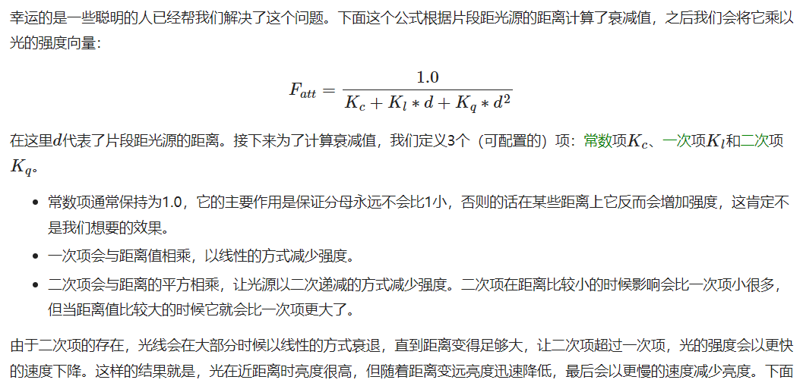
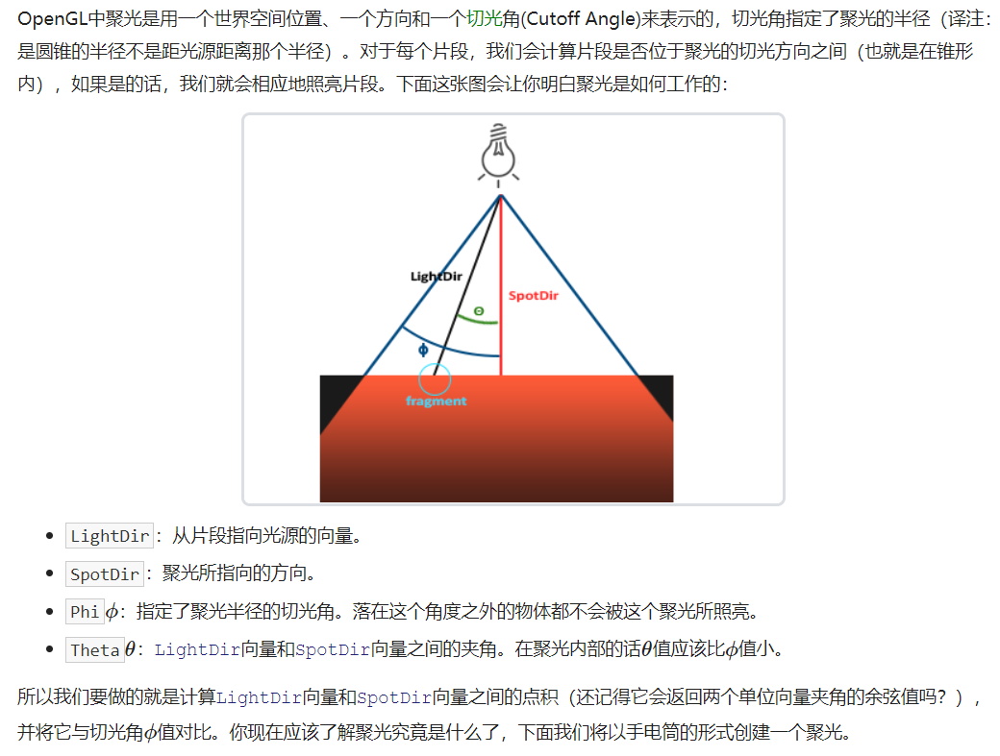
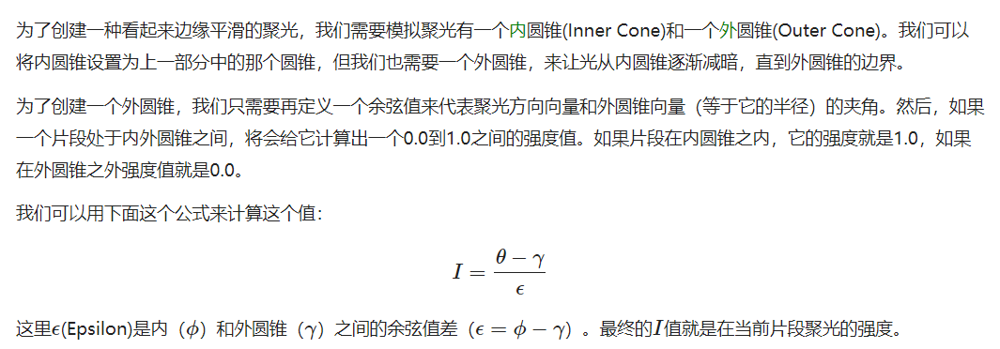
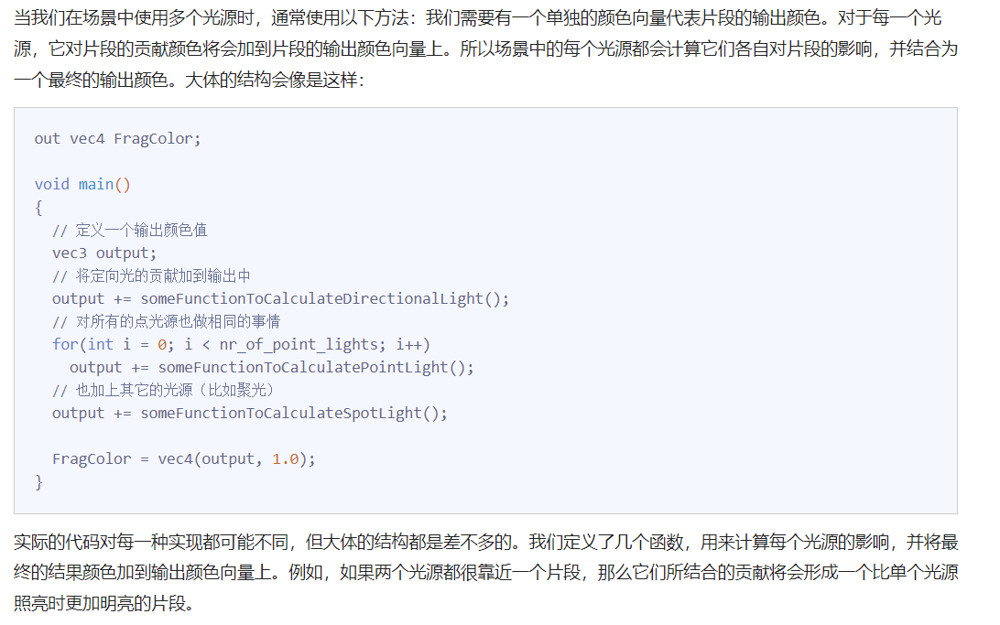

Color
- 用RGB模拟颜色
- 白色(1.0f,1.0f,1.0f)乘上任何颜色(x,y,z)可以得到反射后的颜色,(x,y,z)即是我们看到的物体的颜色
实现一个简单的Phone光照模型
法线矩阵
如果模型矩阵执行了不等比缩放，顶点的改变会导致法向量不再垂直于表面了，所以需要法线矩阵来修复法线的方向
法线矩阵被定义为「模型矩阵左上角3x3部分的逆矩阵的转置矩阵」。
Gouraud Shading和Phone Shading
在光照着色器的早期，开发者曾经在顶点着色器中实现冯氏光照模型。在顶点着色器中做光照的优势是，相比片段来说，顶点要少得多，因此会更高效，所以（开销大的）光照计算频率会更低。然而，顶点着色器中的最终颜色值是仅仅只是那个顶点的颜色值，片段的颜色值是由插值光照颜色所得来的。结果就是这种光照看起来不会非常真实，除非使用了大量顶点。
在顶点着色器中实现的冯氏光照模型叫做Gouraud着色(Gouraud Shading)，而不是冯氏着色(Phong Shading)。记住，由于插值，这种光照看起来有点逊色。冯氏着色能产生更平滑的光照效果。
不同shading方法的区别
说明Phong Shading是在模型每个像素上都去计算的
Materials
用结构体表示材质
如你所见，我们为冯氏光照模型的每个分量都定义一个颜色向量。ambient材质向量定义了在环境光照下这个表面反射的是什么颜色，通常与表面的颜色相同。diffuse材质向量定义了在漫反射光照下表面的颜色。漫反射颜色（和环境光照一样）也被设置为我们期望的物体颜色。specular材质向量设置的是表面上镜面高光的颜色（或者甚至可能反映一个特定表面的颜色）。最后，shininess影响镜面高光的散射/半径。
1 |
|
光的属性
1 | struct Light { |
一个光源对它的ambient、diffuse和specular光照分量有着不同的强度。环境光照通常被设置为一个比较低的强度，因为我们不希望环境光颜色太过主导。光源的漫反射分量通常被设置为我们希望光所具有的那个颜色，通常是一个比较明亮的白色。镜面光分量通常会保持为vec3(1.0)，以最大强度发光。注意我们也将光源的位置向量加入了结构体。
光照贴图(Lighting maps)
漫反射贴图
这可能听起来很熟悉，而且事实上这个系统我们已经使用很长时间了。这听起来很像在之前教程中详细讨论过的纹理，而这基本就是这样：一个纹理。我们仅仅是对同样的原理使用了不同的名字：其实都是使用一张覆盖物体的图像，让我们能够逐片段索引其独立的颜色值。在光照场景中，它通常叫做一个漫反射贴图(Diffuse Map)（3D艺术家通常都这么叫它），它是一个表现了物体所有的漫反射颜色的纹理图像。
在着色器中使用漫反射贴图的方法和纹理教程中是完全一样的。但这次我们会将纹理储存为Material结构体中的一个sampler2D。我们将之前定义的vec3漫反射颜色向量替换为漫反射贴图。
注意:sampler2D是所谓的不透明类型(Opaque Type)，也就是说我们不能将它实例化，只能通过uniform来定义它。如果我们使用除uniform以外的方法（比如函数的参数）实例化这个结构体，GLSL会抛出一些奇怪的错误。这同样也适用于任何封装了不透明类型的结构体。
镜面光贴图
镜面高光的强度可以通过图像每个像素的亮度来获取。镜面光贴图上的每个像素都可以由一个颜色向量来表示，比如说黑色代表颜色向量vec3(0.0)，灰色代表颜色向量vec3(0.5)。在片段着色器中，我们接下来会取样对应的颜色值并将它乘以光源的镜面强度。一个像素越「白」，乘积就会越大，物体的镜面光分量就会越亮。
思考：通过贴图，实际上在代码中还是使用的一个材料结构体，但可以通过采样器得到不同材质的性质。确定，
投光物
平行光
当我们使用一个假设光源处于无限远处的模型时，它就被称为定向光，因为它的所有光线都有着相同的方向，它与光源的位置是没有关系的。
当光定义为vec4的时候，如果light.w=0.0这时候光可能是一个平行光，若light.w=1.0这时候的光向量会当成在描述光源的位置。
点光源
点光源是处于世界中某一个位置的光源，它会朝着所有方向发光，但光线会随着距离逐渐衰减。
光线衰减经验公式

聚光
手电筒/路灯

硬分解线的聚光，通过判断Theta是否比切光交小，来决定该fraction是否执行光照计算。
聚光平滑/软化边缘

多光源

思路是在fragment Shader定义三种不同的光的结构体，然后分别把三种光的shading方式写成类似的vec3 CalcPointLight，把不同光照的结果相加。比较麻烦的地方是，在渲染循环中每次需要手动设置所有光源的参数。
复习Uniform详见入门-着色器
Uniform是一种从CPU中的应用向GPU中的着色器发送数据的方式，但uniform和顶点属性有些不同。首先，uniform是全局的(Global)。全局意味着uniform变量必须在每个着色器程序对象中都是独一无二的，而且它可以被着色器程序的任意着色器在任意阶段访问。第二，无论你把uniform值设置成什么，uniform会一直保存它们的数据，直到它们被重置或更新。